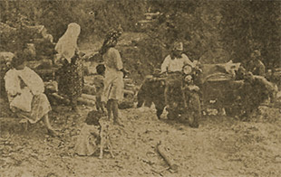

|
j
a v a s c r i p t |
February 8, 1942, Sunday
At noon an angry sentry tore up Maurice’s certificates of residency of the last three years. Not one to take it lying down, Maurice rushed to an officer and complained. I’m not sure what Maurice told the interpreter in Tagalog but the officer bawled the sentry out then made him pick up the pieces and paste them back together! Bicycle thefts in the city have reached epidemic proportions. Poor Georgie Schultze had his stolen, as did the wife of Quinito Ortigas. A few days ago, Eddie Dayan and friends parked three bikes in the Boulevard and sat down 20-feet away. They kept an eye on the bikes while chatting — and still managed to lose one. At 1700, five of us biked to the Boulevard, where we enjoyed a pleasant ride and an ice cream sundae while watching the beautiful sunset silhouette the mountains of Bataan and the comparatively tiny island of Corregidor. There must’ve been another 500 people on bikes and 1,000 on foot doing the same. The glorious setting was almost ruined by the constant honking of Japanese driven cars and trucks rushing-by behind us. Parked nearby and sitting all by himself in the back of a magnificently simonized black Lincoln Zephyr, the admiral of the “orchestra” picture tried to keep his eyes off Corregidor without success. The little lump on the horizon denies his fleet entry into the Bay. Looking dejected, he ordered his chauffeur to drive on.

Fearless Audience
A picture in the Tribune shows a few women and children watching several soldiers push a stalled motorbike up a hill. The caption is a classic: “Note how the children and even their pet animal watch the Jap soldiers without fear.” |
|
|
|
|